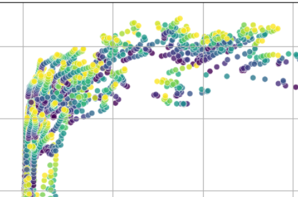
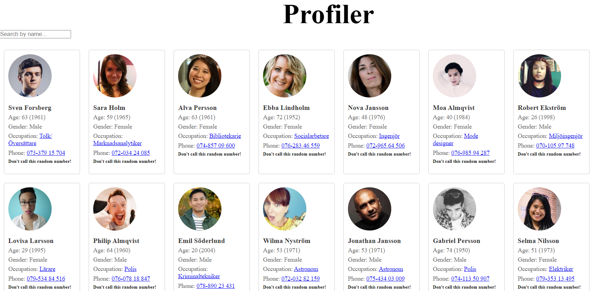

Projects

Flask-API-Books
Auto generated database connected to local api. A bit messy.

GDP-Analytics
GDP analysis of countries in the world. Python.

Person-register-api-html
Person register connected with html with search function.